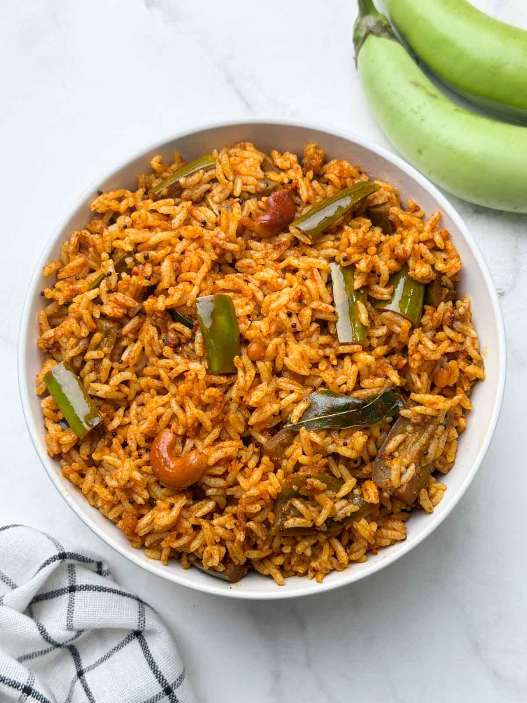

Brinjal Rice
⭐⭐⭐⭐⭐ 4.8 Rating | ⏱ 35 Minutes | 🍽 4 Servings
Category
Lunch / Dinner
Difficulty
Easy
Calories
460 kcal
Cooking Style
Tempered
📋 Ingredients
- 2 cups cooked rice (cooled)
- 200g small purple brinjals (slenderly sliced)
- 1/2 tsp turmeric
- 1 tbsp tamarind extract
- 2 tbsp oil
- 1 tbsp chana dal
- 1 tbsp urad dal
- 1.5 tbsp coriander seeds
- 4 red chillies
- 1 tsp sesame seeds
- 1 inch cinnamon stick
- 1 tsp mustard seeds
- 1 sprig curry leaves
- 8-10 cashews
- pinch of hing
- Salt to Taste
🍳 Required Utensils
- Cast-iron tawa (with handle)
- rolling pin
- skillet/kadai
- spice grinder
- mixing bowls
📖 Introduction
Brinjal Rice (Vangi Bhath) paired with Tandoori Roti offers a vibrant thali combination—bringing together North Indian direct-flame baking with the tangy, aromatic, roasted spice profile of South Indian eggplant rice.
🔬 Principle
Tender brinjals (eggplants) are sautéed in oil to absorb a freshly ground aromatic spice mix (chana dal, coriander, sesame, dried chillies), then tossed with cooled rice to infuse earthy, tangy flavors without making the grains mushy.
👨🍳 Procedure
- Prepare Dough & Vangi Bhath Masala
- Knead wheat flour, curd, baking powder, salt, and water into a soft dough; cover and rest 30 minutes.
- Dry-roast chana dal, urad dal, coriander, red chillies, sesame seeds, and cinnamon until fragrant; cool and grind into a coarse spice mix.
- Soak sliced brinjals in salted water to remove bitterness.
- Heat 2 tbsp oil in a skillet, add mustard seeds, curry leaves, and cashews.
- Add drained brinjals, turmeric, and salt.
- Cover and cook until tender (6-8 minutes).
- Add the freshly ground masala and tamarind extract to the cooked brinjals; sauté for 2 minutes.
- Fold in cooled cooked rice gently until evenly coated.
- Remove from heat and cover.
⚠ Precautions
- Brinjal can trigger mild histamine reactions in sensitive individuals.
- Adjust red chillies according to your spice tolerance.
💡 Chef Tips
- Cut brinjal pieces into uniform medium wedges—overcooking them will turn the rice into a mash instead of clean, distinct bites.
- Use an un-coated iron tawa so the watered dough sticks firmly when inverted upside down over the open flame.
- Add tamarind paste right at the end of cooking the brinjal to maintain a bright, tangy undertone against the warm spice blend.
🥗 Nutrition Facts
| Nutrient | Amount |
|---|---|
| Calories | 460 kcal |
| Protein | 10 g |
| Carbohydrates | 68 g |
| Fat | 17 g |
| Fiber | 8 g |
🍽 Serving Suggestions
- Serve warm alongside cucumber or onion raita to soften the spiced heat of the rice.
- Pair with a rich gravied lentil dal (Dal Tadka) or paneer curry to complement both the dry roti and the seasoned rice thali.
🌿 Health Benefits
- Brinjals are rich in nasunin (a powerful antioxidant) and dietary fiber.
- Whole-wheat roti offers complex carbohydrates for sustained energy.
✅ Result
A hearty meal featuring smoky flatbreads paired alongside rich, spiced, tamarind-accented rice studded with tender brinjal slices.
🎥 Watch Recipe Video
Learn the complete recipe by watching the step-by-step video.
▶ Watch on YouTube